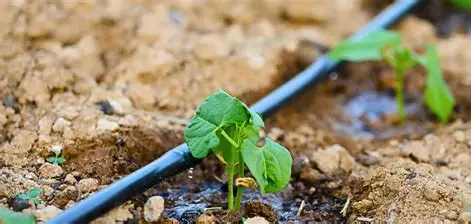
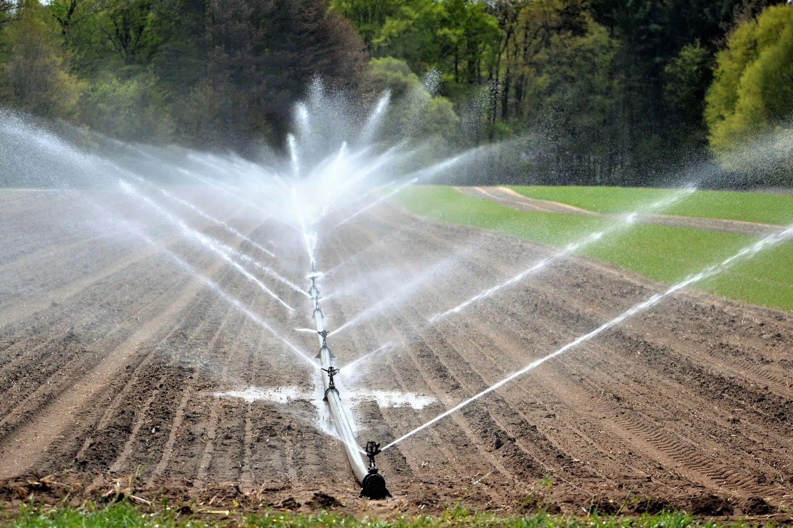
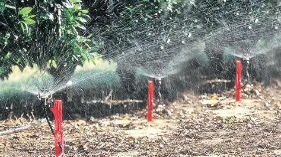
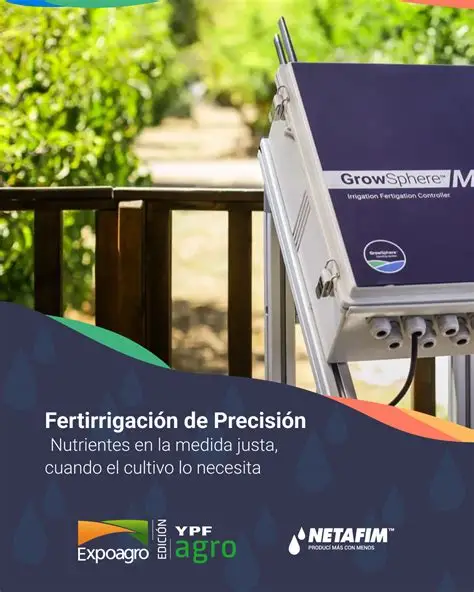

El riego por goteo suministra agua directamente a la raíz de cada planta mediante tuberías y emisores. Es altamente eficiente y reduce el desperdicio de agua.

Utiliza aspersores que distribuyen el agua en forma de lluvia sobre los cultivos. Es ideal para grandes extensiones y simula la precipitación natural.

Consiste en inundar o canalizar agua sobre la superficie del terreno. Es uno de los métodos más antiguos, aunque menos eficiente en el uso del agua.

Integra sensores de humedad y controladores electrónicos que regulan el suministro de agua de manera automática, optimizando recursos y tiempo.
